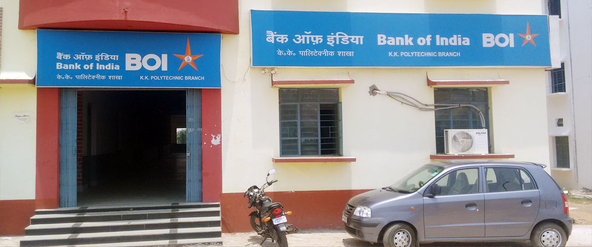
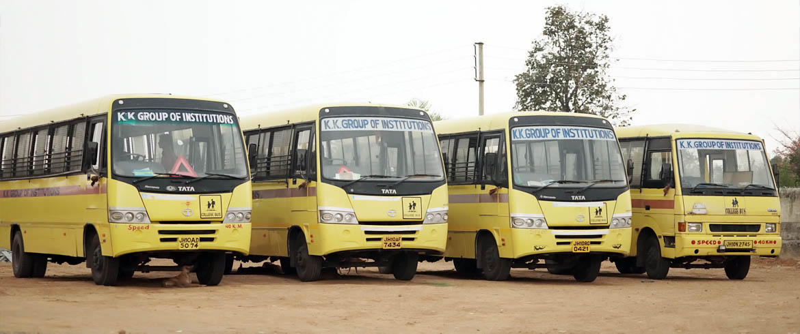

We have Bank of India (BOI) at our Campus. This helps all our Students and Faculty to open a bank account and make transactions safer and faster. We have ATM facility.
K.K. College of Engineering & Management provide banking facility for students and Staff. Bank of India (BOI) has an Extension Counter in College.The Bank has become an integral part of college life by sponsoring seminars and various college activities regularly.
The Bank of India (BOI) has a full fledged branch with core banking network, ATM and Internet banking facilities in the college campus. It offers all types of banking services to the staff and the students. It functions during 6 days in the week from Monday to Saturday. 24 hour ATM service are available.
The students of K.K. College of Engineering & Management can open savings accounts with zero minimum balance, to secure their money and carry out various financial transactions. They do not face any ado whatsoever in this process.
TRANSPORT FACILITY OF KKCEM

A plan is the transport medium which conveys a person from the station of dreams to the destination of success. Goals are the transport fees.
he students have to commute from different areas of the city to college for which the college is providing bus facility from Nairo More to Colleg. Apart from providing transportation facility to student and staff, the college provides the facility for industrial visits.
A full fledged Transport department functions in the college with buses to provide transport facility to students and staff from various places. This service is offered ensuring a hassle-free and safe transportation.
The College runs 22 buses for providing transport facility to students from various places in the city. The number of buses will be increased corresponding to the increase in the intake of students.
One important key to success is self-confidence. An important key to self-confidence is preparation.
Greetings and welcome to the Centre for Training and Placement - the bridge between the Corporate and Campus. We prepare our students with the domain specific technical and soft skills to meet the high expectations of the Corporate World. We emphasize on practicing human values, both in action and spirit. We value our recruiters and maintain sustaining and fruitful relationship with all the organizations visiting us. We believe in maintaining mutual trust and transparency with the companies visiting for campus recruitments. We have the best infrastructure and we assure best quality students from our Engineering College. We work on the principle that there is always scope for improvement. We invite all the esteemed recruiting companies to visit our Engineering College for campus placements.
Training & Placement Centre Team
Mr. Uma Shankar Pandey
Training and Placement Office
Contact :+91 8873334118, E-mail : tpo@kkcemdhanbad.ac.in
Faculty and Staff Coordinators
- Mr. Rajnish Kumar, HOD, Computer Science and Engineering
- Mr. Ranjeet, HOD, Electrical Engineering
 An ISO 9001 : 2008 - 2015 Certified Organization
K. K. College of Engineering & Management
Affilated to Jharkhand University of Technology,Ranchi
An ISO 9001 : 2008 - 2015 Certified Organization
K. K. College of Engineering & Management
Affilated to Jharkhand University of Technology,Ranchi
 Scholarship & Fee structures
Scholarship & Fee structures